دليل المستخدم
رفيقٌ يرافقني في رحلة العناية بنفسي
جولة مصوّرة في كل أجزاء رفيق، بلغة بسيطة.
رفيقٌ هادئ وخاص يرافقني في عشر خطوات للعناية بنفسي، ويبقى كل ما أكتبه فيه على جهازي فقط.
خمسة أقسام في الشريط السفلي، وزران في أعلى الرئيسية. أعرف أين أجد كل شيء.
| القسم | ما أجده فيه |
|---|---|
| الرئيسية | تسجيل سريع، الخطوة الحالية، محفّزاتي، ملاحظاتي، مراجعة الأسبوع، خطة السنة |
| الرحلة | الخطوات العشر وتمارينها الموجّهة |
| التتبّع | تقويم الشهر، منحنى الشدّة، أكثر المشاعر حضورًا |
| لمعالجي | أجندة الجلسة، ملاحظات الجلسات، واجباتي، ملاحظاتي، ملخّص المعالج |
| مكتبتي | قراءة هادئة عن اضطراب الشخصية الحدّية من مصادر موثوقة |
| أحتاج تهدئة | زر في أعلى الرئيسية: تنفّس، تأريض بالحواس، وأرقام دعم عاجلة |
| الإعدادات | رابط في أسفل الرئيسية: المظهر، البلد، النسخ الاحتياطي، التذكير، معلوماتي |
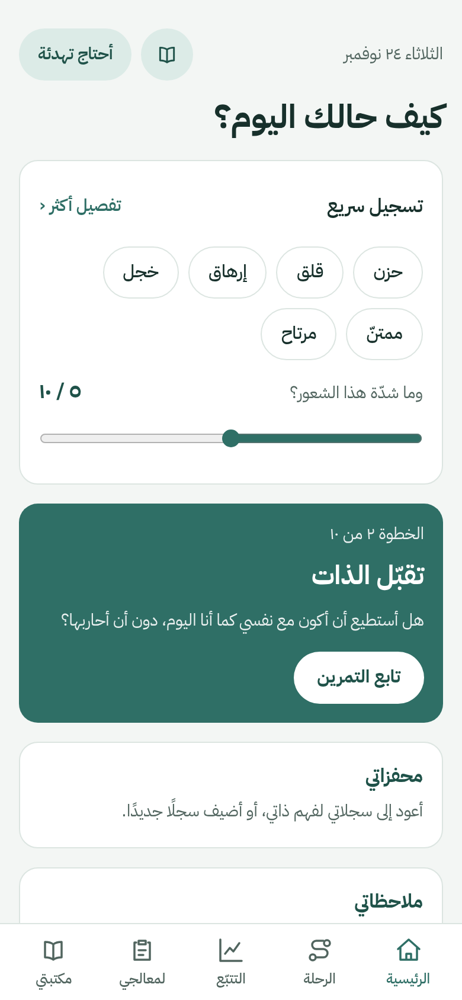
أول ما أراه حين أفتح التطبيق: كيف حالي اليوم، وما الخطوة التالية.
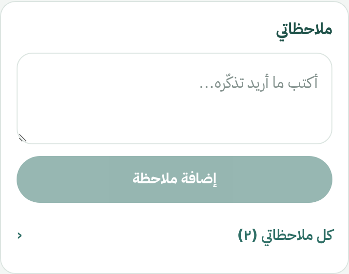
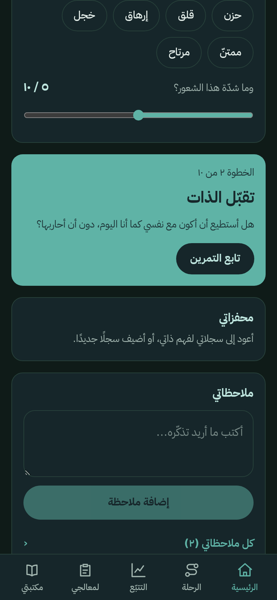
صفحة التسجيل الكاملة تتّسع لما أشعر به. لا توجد مشاعر خاطئة.
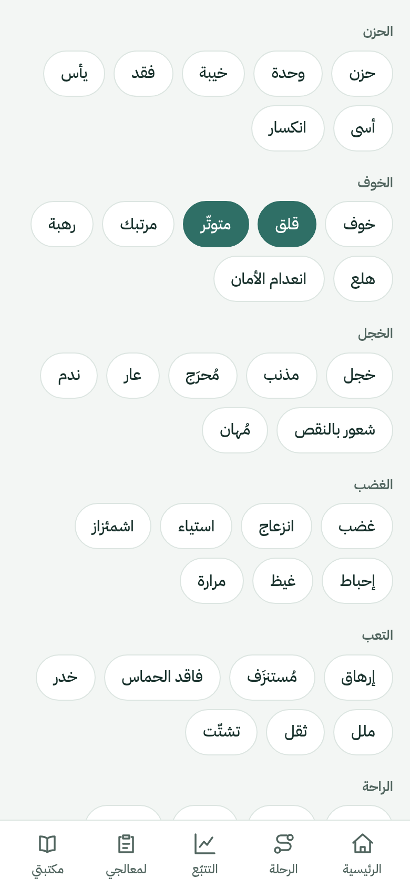
أرى كيف مرّت أيامي دون ضغط ولا لوم.
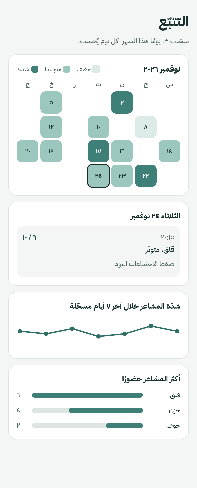
أمشيها بالترتيب الذي يناسبني، وأعود إلى أي خطوة في أي وقت. لا شيء مقفل.
| # | الخطوة | سؤالها الأساسي |
|---|---|---|
| ١ | تصديق المشاعر | هل مشاعري مشروعة حتى لو كانت مؤلمة؟ |
| ٢ | تقبّل الذات | هل أستطيع أن أكون مع نفسي كما أنا اليوم؟ |
| ٣ | تنظيم الذات | كيف أهدّئ نفسي وأوجّه انفعالي؟ |
| ٤ | فهم الذات | ما الذي أحتاج إلى فهمه حقًا عن نفسي؟ |
| ٥ | التعاطف مع الذات | كيف أخاطب نفسي حين أخطئ؟ |
| ٦ | مسامحة الذات | كيف أتحرر من الذنب والعار عن الماضي؟ |
| ٧ | الحدود واحترام الذات | ما الذي أقبله من الآخرين وما الذي لا أقبله؟ |
| ٨ | الثقة بالنفس | هل أستطيع أن أفي بوعودي لنفسي؟ |
| ٩ | العناية والعادات | ما الروتين الذي يبقيني ثابتًا؟ |
| ١٠ | القيم والاتجاه | من أريد أن أصبح، وما الذي يهمّني حقًا؟ |
حالة كل خطوة تظهر على بطاقتها: «قيد التمرين» أو «مكتملة». الخطوات ١–٣ تتبع بنية وضعها معالج صاحب المشروع، والخطوات ٤–١٠ مسودات يراجعها مختص.
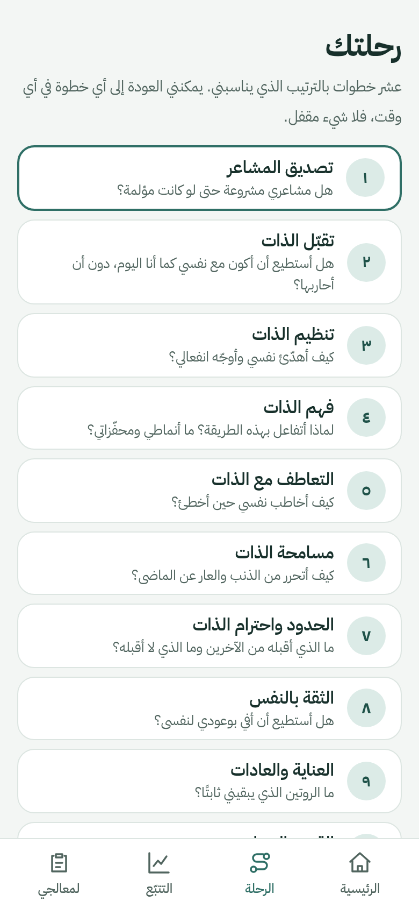
داخل كل خطوة شرح قصير وتمارين من أسئلة متفرّعة: ما أجيب به يحدّد السؤال التالي.
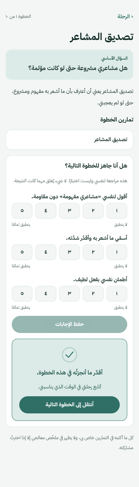
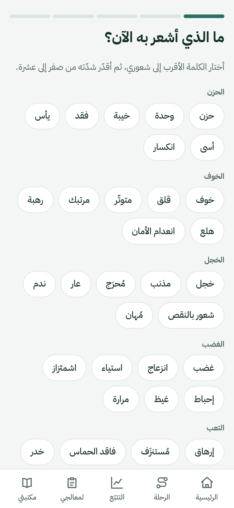
سجلّ لما يزعجني، أفهمه ببطء. هو تمرين الخطوة الرابعة.
أبدأ «فهم مشكلة» وأجيب عن خمسة أسئلة:
تظهر سجلاتي المكتملة في قائمة. أفتح أي سجلّ فأقرأه، وأستطيع تعديله أو حذفه (مع تأكيد قبل الحذف).
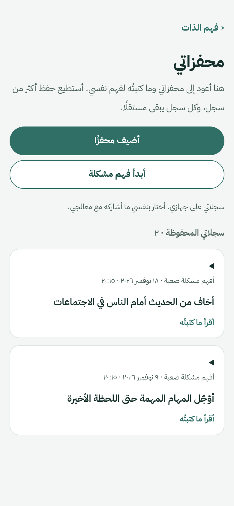
زر واحد في أعلى الرئيسية وصفحة تقول لي: «لا شيء مطلوب منّي الآن سوى أن أتنفّس».
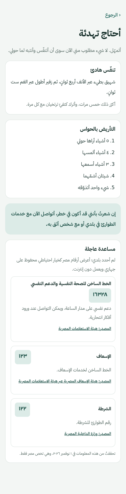
قسم يجمع كل ما يخصّ جلساتي، ليكون ما أقوله لمعالجي مرتّبًا.
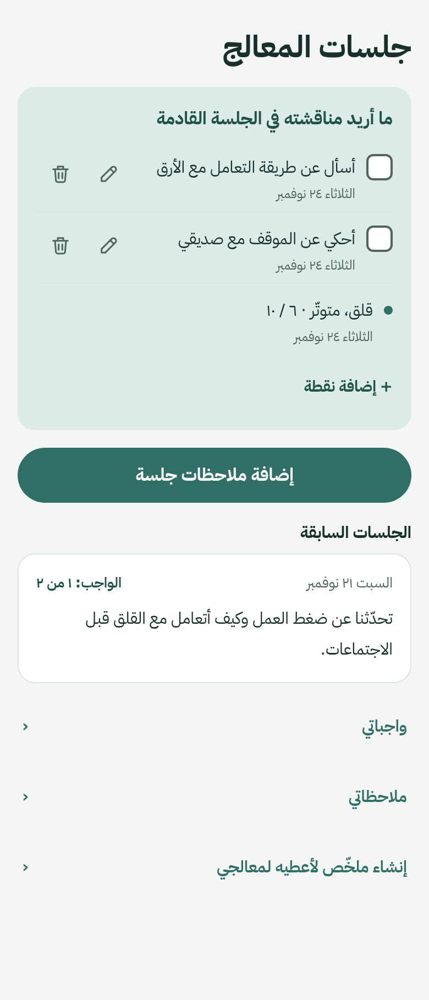
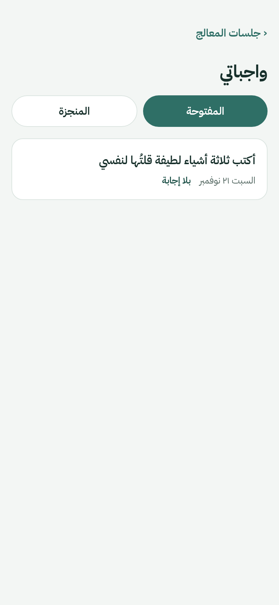
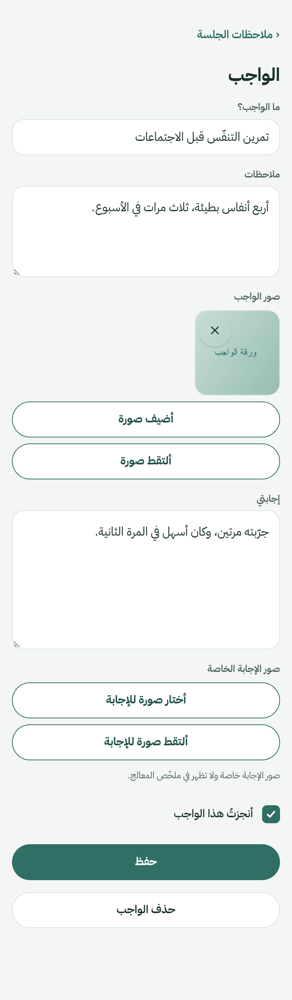
مكان أكتب فيه ما أريد تذكّره طوال الأسبوع، دون أن أنتظر الجلسة.
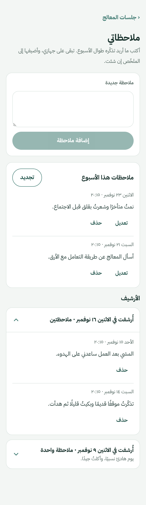
ورقة منظّمة بحجم A4 أسلّمها لمعالجي. لا يُرسَل شيء إلى أي مكان.
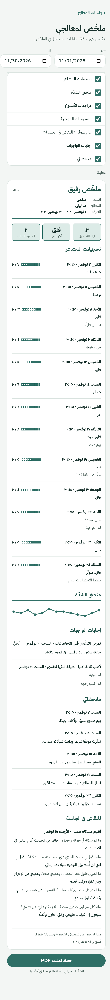
قراءة هادئة عن اضطراب الشخصية الحدّية، من مصادر موثوقة وبكلمات لا تؤذي. القراءة ليست تشخيصًا.
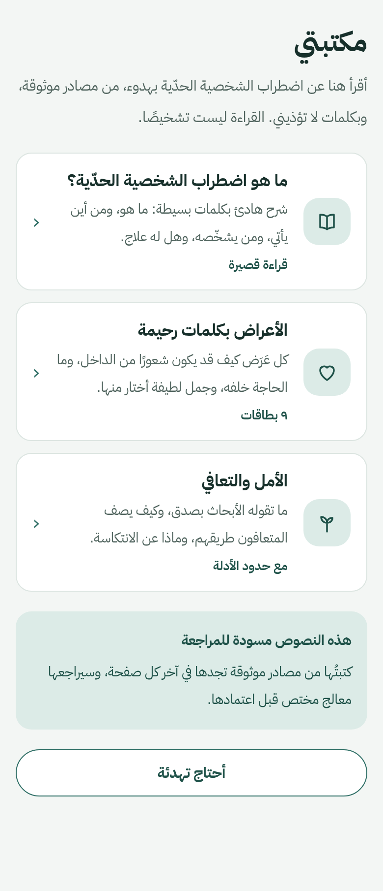
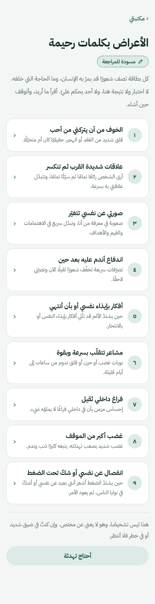
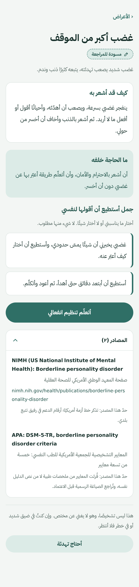
خطة من اثني عشر شهرًا تبدأ من الشهر الذي أختاره.
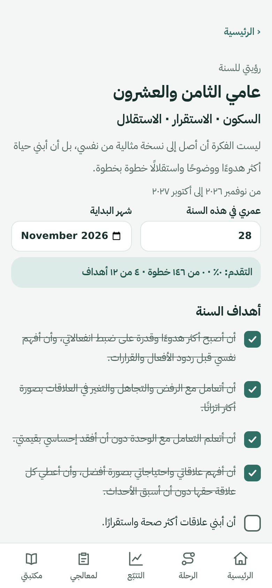
كل ما يخصّ مظهر التطبيق وبياناتي في مكان واحد.
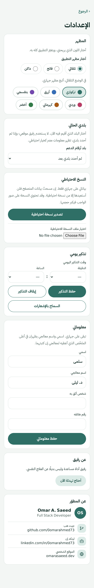
بياناتي على جهازي فقط. إن مسحتُ بيانات المتصفح أو فقدتُ الهاتف فلن أستعيدها إلا من نسخة احتياطية.
| ما أريده | ما أفعله |
|---|---|
| حفظ نسخة | الإعدادات ← تصدير نسخة احتياطية (في أندرويد أختار مكان الحفظ على جهازي) |
| نقل بياناتي إلى جهاز آخر | في أندرويد: مشاركة نسخة احتياطية ← أرسلها إلى الجهاز الآخر عبر تطبيق أثق به، ثم أستوردها هناك |
| الاستعادة | اختيار ملف النسخة الاحتياطية ← أختار الطريقة ← استيراد |
يتحقّق التطبيق من الملف قبل أن يلمس بياناتي، والاستيراد إمّا أن ينجح كاملًا أو لا يغيّر شيئًا، ولا يتغيّر شيء قبل أن أؤكّد.
صُمّم رفيق ليبقى كل شيء بيدي.
إجابات قصيرة لما يسأله كثيرون.
رفيق أداة مساعدة ذاتية، وليس جهازًا طبيًا ولا يقدّم تشخيصًا أو علاجًا.
إن كنتُ في أزمة، أتصل بخدمات الطوارئ المحلية أو بشخص أثق به فورًا. وفي التطبيق صفحة «أحتاج تهدئة» فيها أرقام الدعم.
أستطيع دائمًا أن أبدأ من جديد، وأن أسير بسرعتي، وأن أتوقف حين أشاء.
| الرابط | العنوان |
|---|---|
| التطبيق على الويب | https://rafiq-iota-neon.vercel.app |
| تطبيق أندرويد والإصدارات | github.com/0omarahmed73/rafiq/releases |
صُنع بعناية · Omar A. Saeed · Full Stack Developer